Program Keahlian
SMKN 1 Rancah memiliki program keahlian berikut. Pilih salah satu untuk melihat informasi lengkapnya.
Desain Komunikasi Visual
Tujuan Pembelajaran
- Membekali siswa dengan kemampuan membuat desain grafis dan komunikasi visual yang kreatif.
- Mengembangkan keterampilan ilustrasi, fotografi, tipografi, dan pengolahan gambar digital.
Fasilitas Laboratorium / Praktik
- Laboratorium komputer desain grafis.
Kegiatan Praktik
- Membuat desain poster dan brosur.
- Membuat ilustrasi digital.
Prospek Kerja Lulusan
- Desainer Grafis (Graphic Designer)
Dokumentasi Kegiatan Praktik
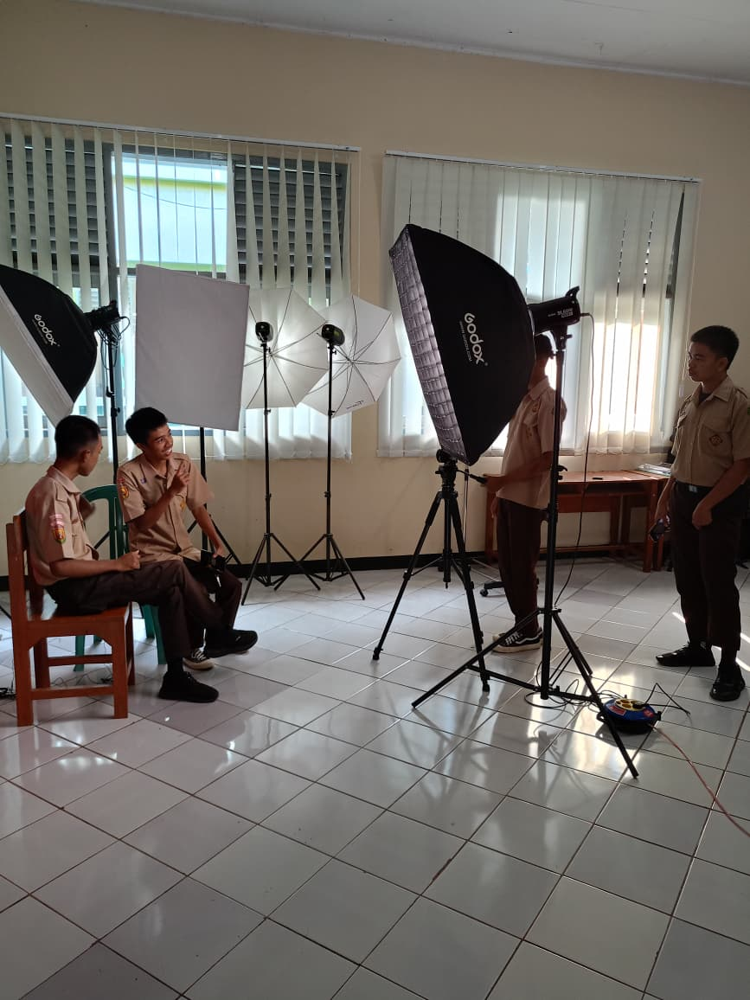
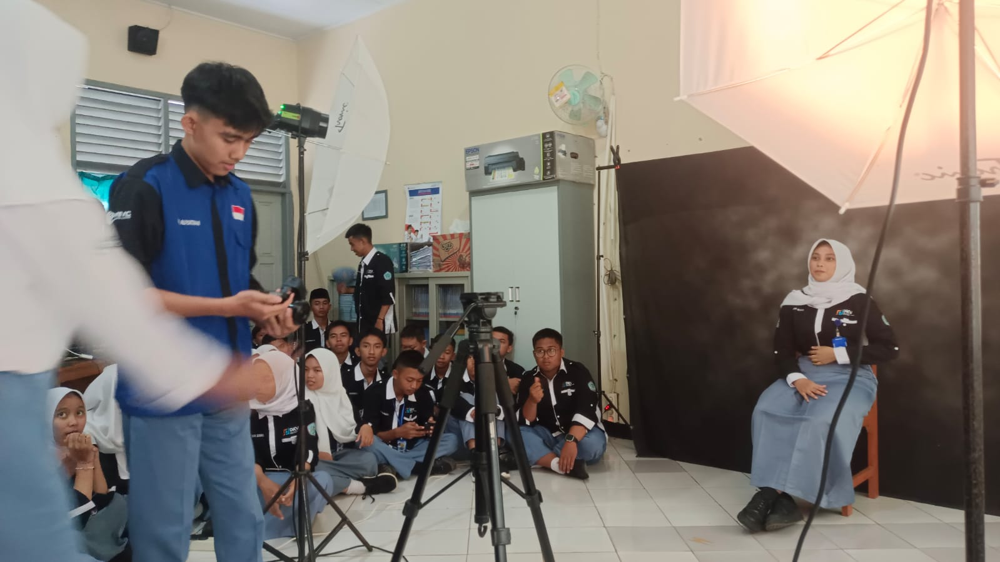
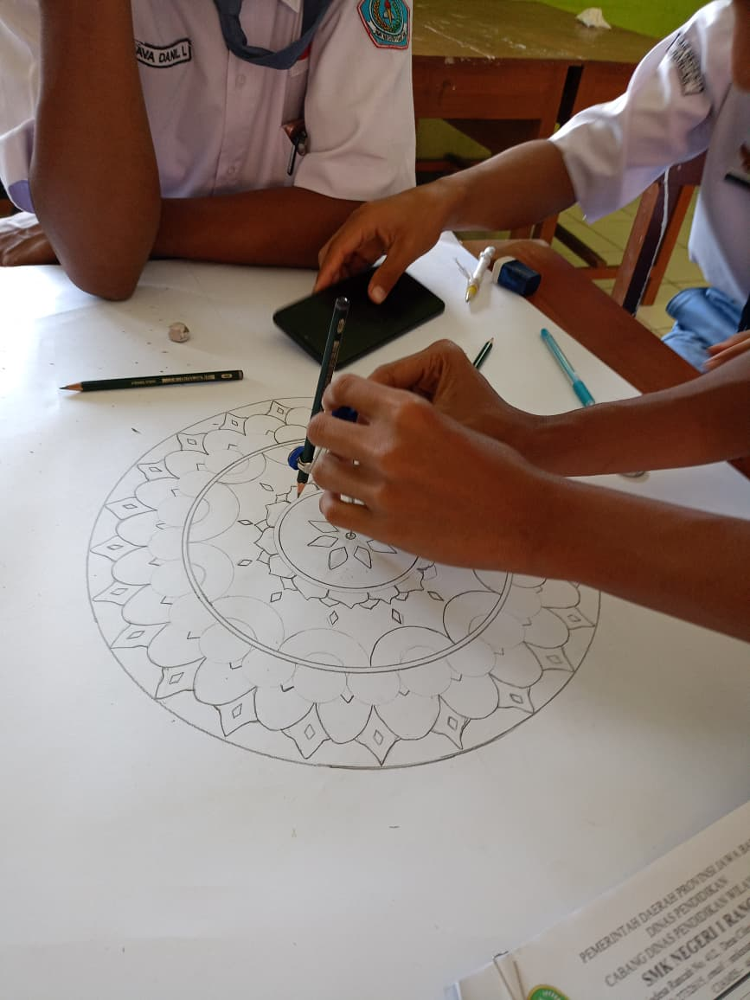
Bisnis Digital
Tujuan Pembelajaran
- Membekali siswa dengan pengetahuan dan keterampilan dalam menjalankan bisnis berbasis digital.
- Mengembangkan kemampuan pemasaran produk melalui media sosial dan platform digital.
Fasilitas Laboratorium / Praktik
- Komputer atau PC untuk praktik bisnis digital.
Kegiatan Praktik
- Membuat konten promosi produk untuk media sosial.
Prospek Kerja Lulusan
- Digital Marketing Specialist.
Dokumentasi Kegiatan Praktik
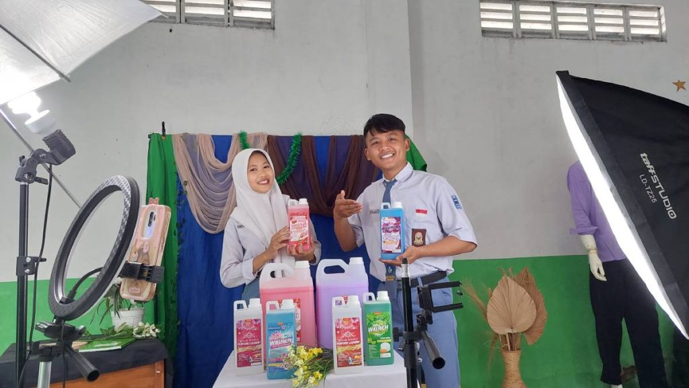
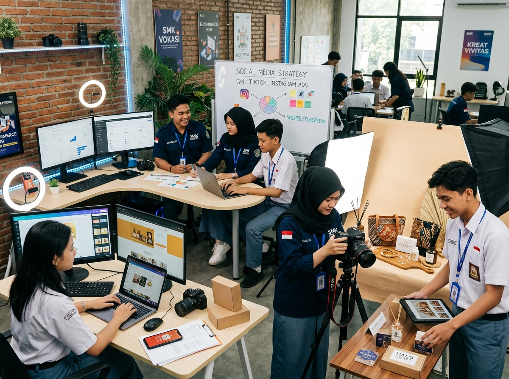
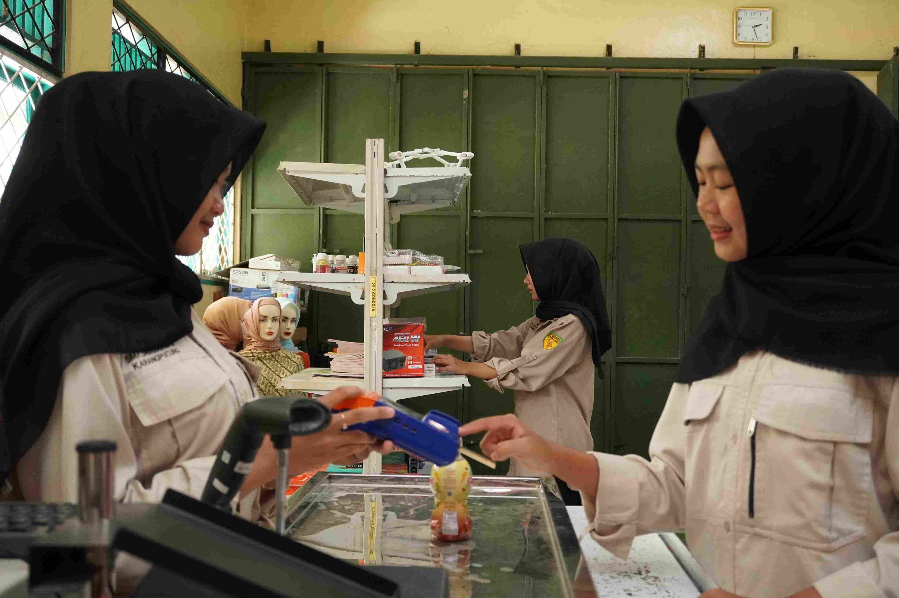
Akuntansi dan Keuangan Lembaga
Tujuan Pembelajaran
- Membekali siswa dengan pengetahuan dan keterampilan dalam bidang akuntansi dan pengelolaan keuangan.
- Mengembangkan kemampuan mencatat, mengelompokkan, dan menyusun laporan keuangan.
Fasilitas Laboratorium / Praktik
- Komputer atau PC untuk praktik akuntansi.
Kegiatan Praktik
- Membuat laporan keuangan menggunakan Microsoft Excel.
Prospek Kerja Lulusan
- Staf Administrasi Keuangan.
Dokumentasi Kegiatan Praktik
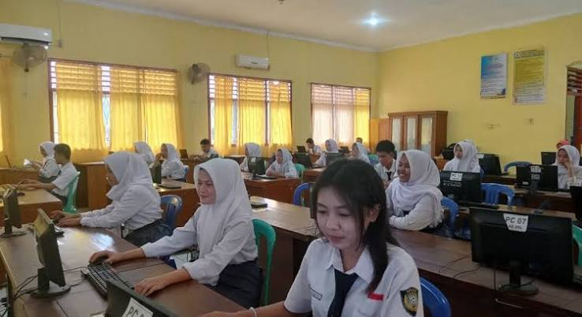
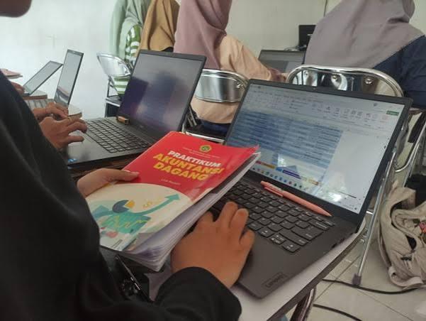
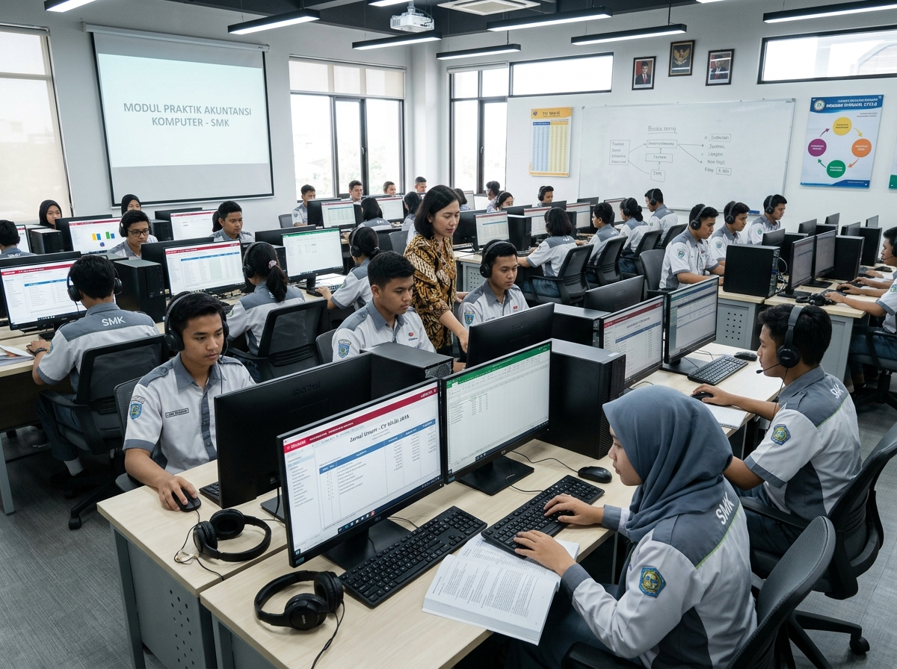
Teknik Otomotif
Tujuan Pembelajaran
- Membekali siswa dengan pengetahuan dan keterampilan dalam bidang perawatan dan perbaikan kendaraan bermotor.
- Mengembangkan kemampuan mendiagnosis kerusakan pada mesin dan komponen kendaraan.
Fasilitas Laboratorium / Praktik
- Bengkel praktik otomotif.
Kegiatan Praktik
- Mempelajari teknologi kendaraan modern.
Prospek Kerja Lulusan
- Teknisi di perusahaan otomotif.
Dokumentasi Kegiatan Praktik
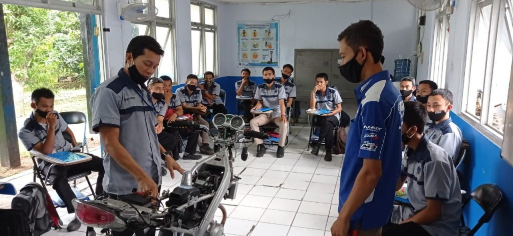
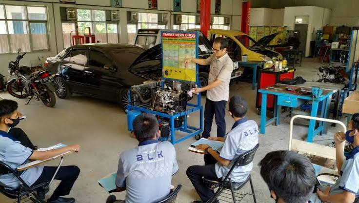
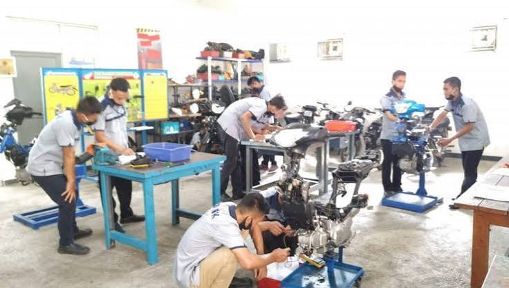
Teknik Elektronika
Tujuan Pembelajaran
- Membekali siswa dengan pengetahuan dan keterampilan dalam bidang elektronika dan kelistrikan.
- Mengembangkan kemampuan memahami komponen, rangkaian, dan sistem elektronika.
Fasilitas Laboratorium / Praktik
- Laboratorium elektronika.
Kegiatan Praktik
- Merancang dan merakit rangkaian elektronik sederhana.
Prospek Kerja Lulusan
- Operator Produksi Industri Elektronik.
Dokumentasi Kegiatan Praktik
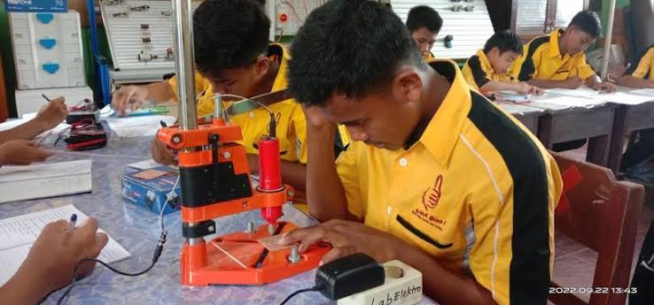
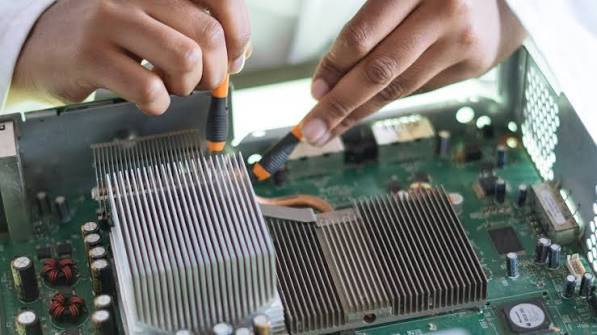
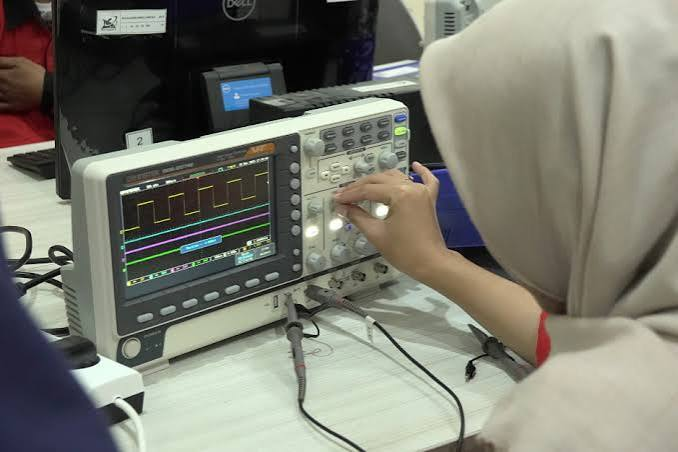
Teknik Konstruksi dan Perumahan
Tujuan Pembelajaran
- Membekali siswa dengan pengetahuan dan keterampilan dalam bidang konstruksi bangunan dan perumahan.
- Mengembangkan kemampuan membaca dan memahami gambar teknik bangunan.
Fasilitas Laboratorium / Praktik
- Peralatan praktik pertukangan.
Kegiatan Praktik
- Menggambar desain bangunan menggunakan AutoCAD.
Dokumentasi Kegiatan Praktik
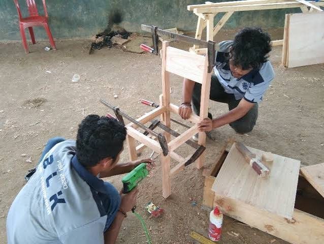
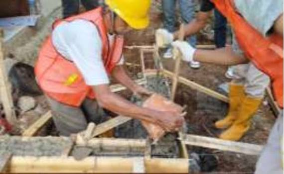
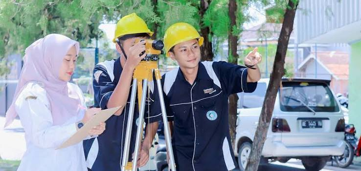